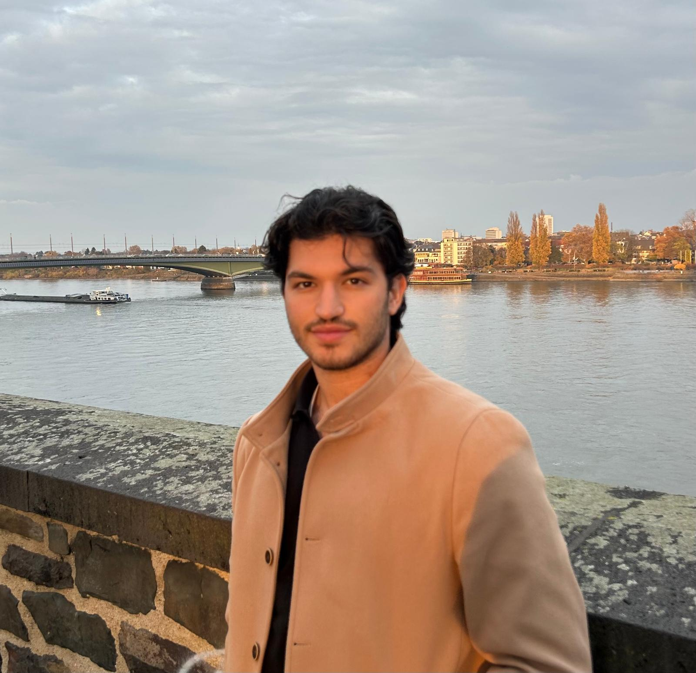

Towards a Generalizable Fusion Architecture for Multimodal Object Detection
Paper2025
ICCV 2025 MIRA Workshop, Honolulu, USA.

About
Hi, I am Jad Berjawi, a researcher working at the intersection of computer vision and medical imaging. My background spans academic research, multimodal learning, software development, and practical machine learning systems.
I am currently a Ph.D. student at INSERM and LIG in Grenoble, where I study representation learning and transfer strategies for 3D medical image analysis under limited supervision. I am especially interested in building models that remain useful when data, labels, and compute are constrained.
Current research
My current Ph.D. work is centered on the following question:
How can representation learning and transfer strategies make 3D SPECT MPI analysis more reliable when data and supervision are limited?
This work brings together medical imaging, self-supervision, transfer learning, and multimodal AI, with the goal of producing practical models that generalize well beyond ideal research settings.
Selected research output and workshop publications.
ICCV 2025 MIRA Workshop, Honolulu, USA.
Research, development, and applied engineering work.
Academic background and current training.
Representation Learning and Transfer Strategies for 3D Medical Image (SPECT MPI) Analysis Under Limited Supervision.
Specialization in AI for vision, graphics, interaction, and robotics with coursework in advanced machine learning, computer vision, and data science.
Minor in Actuarial Science.
Tools and topics I use most often.